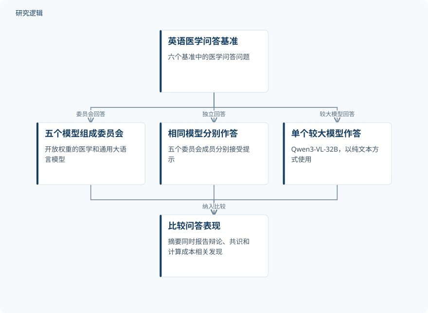

摘要解读
厨师过多反而坏事：审视多智能体大语言模型议会的医学推理
Too Many Cooks Spoil The Broth: Auditing Multi-Agent LLM Councils For Medical Reasoning
解读更新 2026-11-27 22:54 · 依据公开摘要整理，未核验全文细节
多个大模型共同讨论，是否真的能让医学问答更准确？这项研究审视模型间的辩论与共识，提醒读者区分“达成一致”和“答案正确”。
文章目录
医学问答中的多模型共识可靠吗
多智能体辩论的常见设想是：让大语言模型相互纠错，从而改善推理。本文针对英语医学问答审视这一假设，关注模型最终答对多少，也关注讨论何时以及如何改变答案。
委员会、独立模型与较大模型的比较
研究让五个开放权重的医学和通用大语言模型组成委员会，回答六个基准中的 8,402 道问题；这些模型的规模为 4 至 8B。比较对象包括同样五个模型分别接受提示时的表现，以及以纯文本方式使用的单个较大模型 Qwen3-VL-32B。
依据摘要整理的模型比较示意


仅概括摘要明确陈述的问答设置与比较关系，不代表论文原图。
下载 SVG图示关系说明
实线表示相邻阶段的信息流，虚线表示跨阶段联系或反馈。
英语医学问答基准 → 五个模型组成委员会：委员会回答；英语医学问答基准 → 相同模型分别作答：独立回答；英语医学问答基准 → 单个较大模型作答：较大模型回答；五个模型组成委员会 → 比较问答表现：纳入比较；相同模型分别作答 → 比较问答表现：纳入比较；单个较大模型作答 → 比较问答表现：纳入比较
辩论前已有优势，共识也可能出错
委员会在六个数据集中的五个上胜过每个成员，但其大部分准确表现并非来自后续辩论：67% 的最终判断在第 0 轮就已确定；在六个数据集中的五个上，这部分问题的准确率更高。
在实际发生辩论的情形中，观点变化集中指向一个锚定对象。在最难的基准上，向该对象靠拢的观点变化有 85% 发生在它给出错误答案时。
同一最难基准中，五个模型全部一致的问题，正确率为 6.6%；未全部一致的问题则为 14.6%。这一现象与模型共同偏向第一个选项有关。模型一致因此可能反映共享偏差，而不能直接充当正确性的证据。
委员会在六个数据集中的四个上落后于较大模型，差距最高达 16.2 个百分点；与此同时，委员会使用了七倍的模型调用和 1.6 倍的计算量。
摘要能支持多大范围的判断
摘要给出了问题总数、基准数量和模型规模，但未说明各基准的样本构成，也未展开各数据集的完整比较结果。仅凭摘要，无法判断这些发现对其他语言、医学任务或模型组合的适用范围。
摘要也未详述辩论流程、锚定对象的具体定义和验证细节。因此，这里报告的是摘要中的比较与关联，不宜据此推断所有多智能体系统都无效，或将共识偏差归因于某个未说明的机制。
阅读启发：把共识视为待核验的信号
阅读启发：评估多模型问答时，可以留意最终准确率之外的讨论前后变化，并追问一致意见是否伴随共同偏差。进一步阅读论文时，可重点查看辩论流程、各基准的比较结果以及计算成本的统计方式。
以上为本站阅读启发与建议，不是论文已验证的结论。